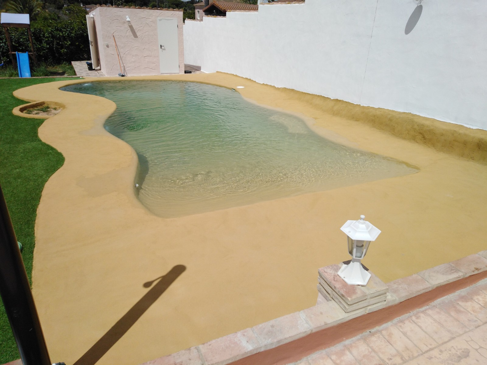
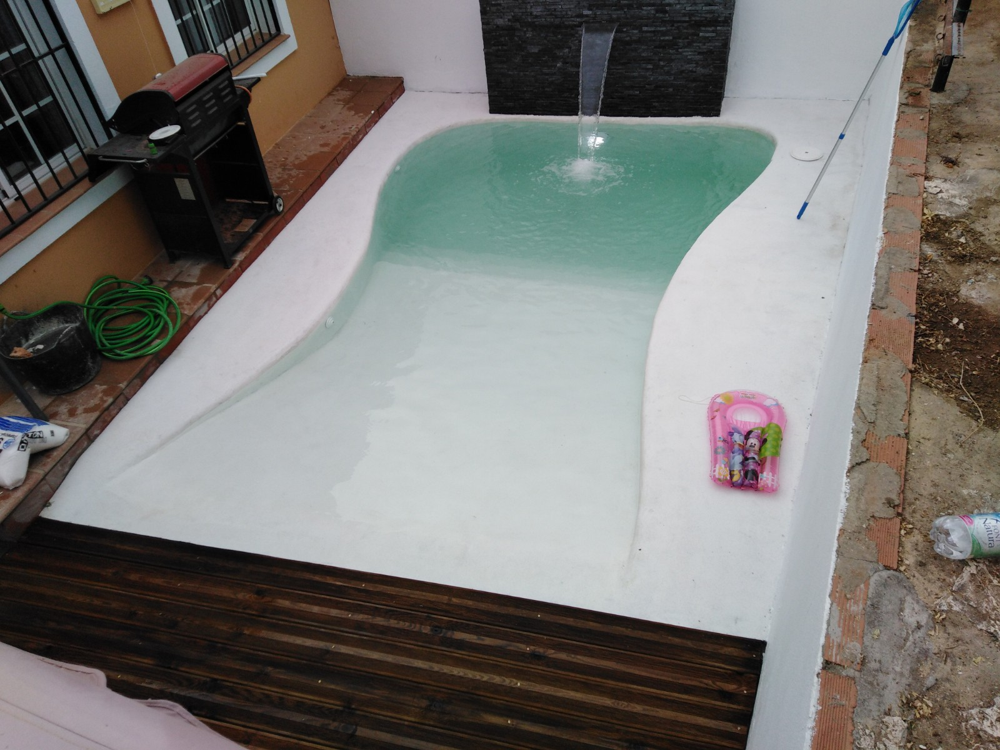

Entrada y profundidad
Definimos las pendientes y las zonas de baño según el espacio disponible y el uso previsto.
PISCINAS DE ARENA · ARCOS Y CÁDIZ
Formas orgánicas, acabados de aspecto natural y una entrada tipo playa. Diseñamos el vaso para relacionar el agua con el jardín y el espacio disponible.
Consultar mi proyecto ↗
DISEÑO Y FUNCIONAMIENTO
Esta propuesta combina formas suaves y revestimientos de aspecto natural. La entrada tipo playa introduce una transición progresiva desde el exterior hacia el agua.
El acabado concreto se elige según el sistema constructivo y el soporte. El aspecto de arena no identifica por sí solo el material utilizado: hay que definir el producto y su compatibilidad con la inmersión.
ANTES DE CONSTRUIR
Valoramos el espacio, los acabados y las instalaciones dentro de un mismo proyecto.
Definimos las pendientes y las zonas de baño según el espacio disponible y el uso previsto.
Seleccionamos un sistema apto para piscinas, con una preparación del soporte acorde al fabricante.
Las curvas, los tonos y el pavimento ayudan a crear continuidad con el exterior.
La recogida de agua y los equipos se estudian para la forma del vaso, incluyendo las zonas de poca profundidad.
DETALLES DE OBRA
Fotografías para apreciar el vaso, los bordes y su relación con el exterior.

RESOLVEMOS TUS DUDAS
El acabado y la entrada son decisiones distintas. Pueden combinarse, pero se definen según el diseño y el espacio.
El aspecto natural no sustituye la depuración ni el tratamiento del agua. Hay que mantener el vaso y los equipos como indique el sistema instalado.
Se puede estudiar una solución adaptada al espacio. Las pendientes de la entrada ocupan parte del vaso, por lo que conviene valorar las dimensiones y la zona de baño.
El presupuesto depende de las dimensiones, el terreno, los accesos, los acabados y las instalaciones. Envíanos la localidad, fotos del espacio y las medidas aproximadas para estudiar el proyecto.
ENCUENTRA TU ESTILO
OCM POOL · CERCA DE TI
Cuéntanos dónde quieres construir o renovar tu piscina. Con unas fotografías y las medidas aproximadas podremos estudiar el siguiente paso.
Pedir presupuesto por WhatsApp